Córtex Estudos · 4º Semestre · Anato Pato II · Aula 10 (07/10)
Patologias da Tireoide
Aula de base para o simpósio de tireoide: histologia do folículo, como o T3 e o T4 são fabricados e por que o eixo hipotálamo–hipófise–tireoide manda em tudo. Depois, os dois lados da balança. Tirotoxicose: excesso de hormônio circulante, cuja causa mais comum é o hipertireoidismo. Hipotireoidismo: falta de hormônio, que no adulto vira mixedema e no começo da vida vira cretinismo. A regra que guia a aula toda: "é tudo ao contrário". O que o excesso de hormônio acelera, a falta freia.
🔗 O que ficou para o simpósio
As doenças específicas (doença de Graves, bócio multinodular hiperfuncionante, adenoma hiperfuncionante, tireoidite de Hashimoto, tireoidite de De Quervain etc.) foram distribuídas entre os grupos do simpósio, com roteiro de etiologia, patogênese, clínica, exames e macro/micro. Este hub cobre só a aula introdutória: histologia, fisiologia, tirotoxicose, hipotireoidismo, cretinismo e mixedema.
1 · Anatomia e histologia: folículo, coloide e células C
- Glândula endócrina responsável pela produção de T3 e T4. Pesa ~10–20 g; mede cerca de 2 cm de largura × 4 cm de comprimento × 1,5–2 cm de espessura.
- Localização: porção anterior do pescoço, abaixo e anteriormente à laringe. Dois lobos laterais volumosos ligados por um istmo.
- Cápsula de conjuntivo, rica rede de capilares fenestrados, e septos que dividem a glândula em lóbulos. Cada lóbulo tem cerca de 20 a 40 folículos, separados por septo fibroso estreito.
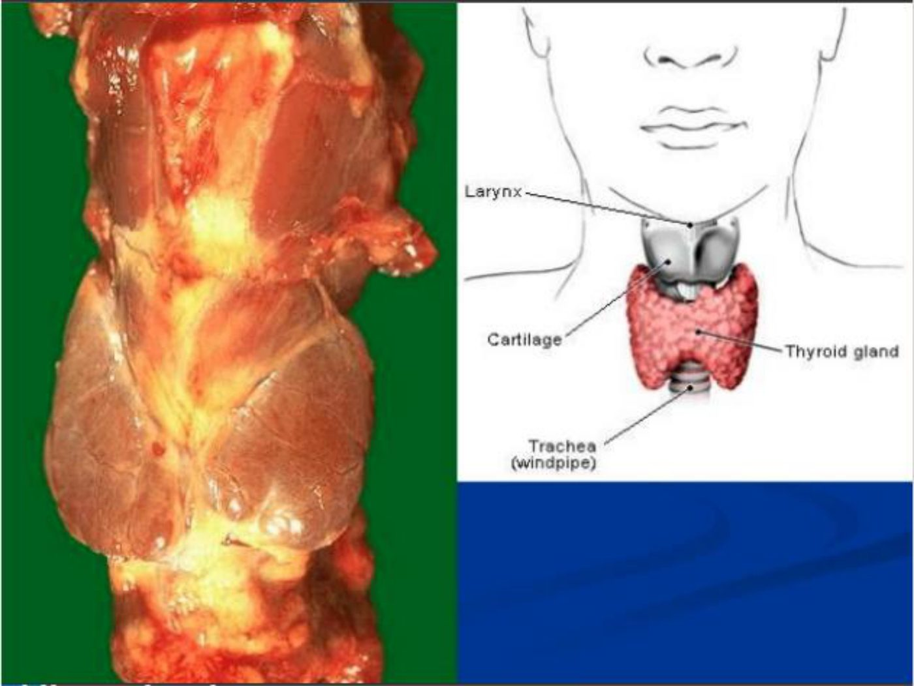
O folículo
- Células foliculares = tireócitos (mesma coisa): revestem o folículo e produzem os hormônios.
- A luz do folículo armazena o coloide, rico em tireoglobulina, a proteína que serve de base para o T3 e o T4. No coloide ficam os hormônios prontos e os precursores (MIT e DIT).
- O epitélio varia de pavimentoso/cuboide a colunar, e a altura da célula reflete a atividade:
- Células achatadas → menor atividade secretora;
- Células colunares, com núcleo grande e evidente → maior atividade, "a célula está trabalhando bastante".
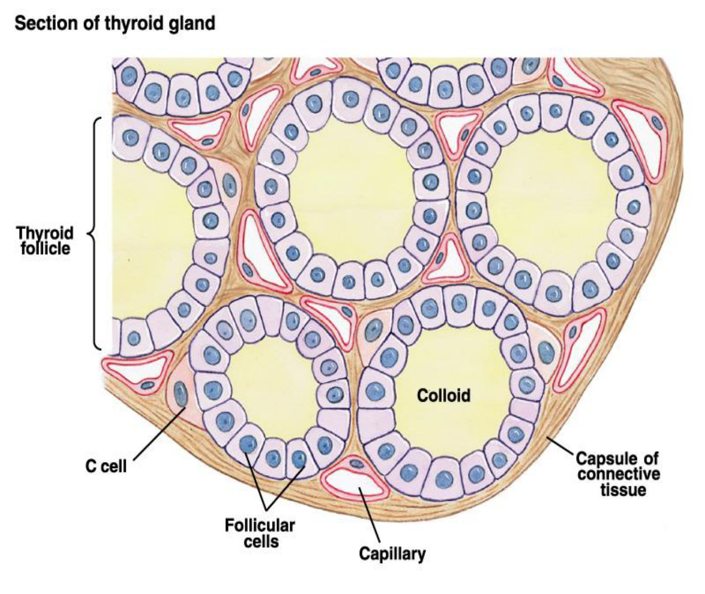
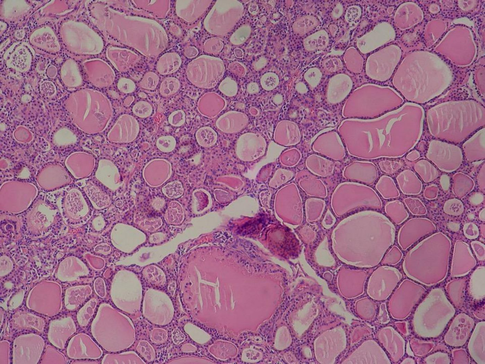
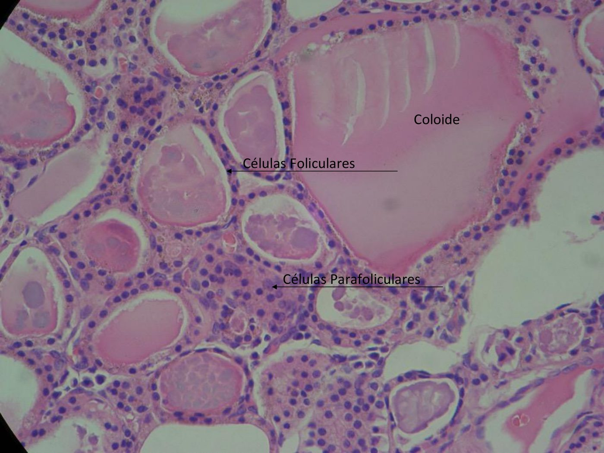
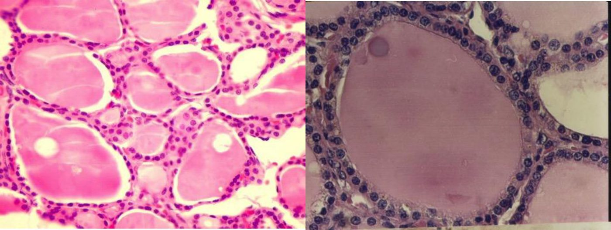
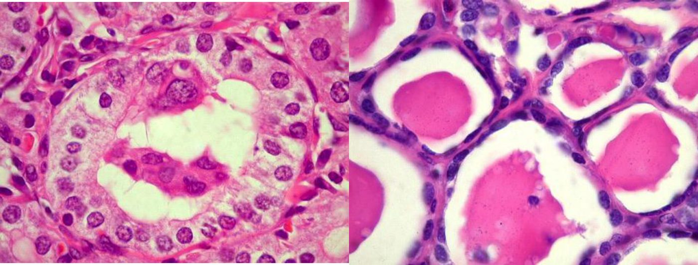
Células C (parafoliculares)
- Ficam entre os folículos; o nome "C" vem de calcitonina, o hormônio que produzem.
- A calcitonina inibe os osteoclastos → reduz a reabsorção óssea → favorece a deposição de cálcio no esqueleto e baixa o cálcio no sangue. É um hormônio hipocalcemiante.
- A aula só citou a célula C; ela não foi aprofundada.
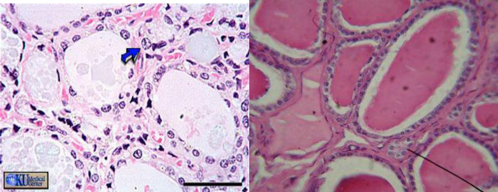
⚠️ Nota sobre a calcitonina (aula × literatura)
Na fala, a calcitonina "aumenta os níveis de cálcio no sistema esquelético" e "diminui o cálcio na circulação". As duas frases estão certas e dizem a mesma coisa: ao inibir o osteoclasto, mais cálcio fica no osso e menos vai para o sangue. Na literatura, o efeito hipocalcemiante é real, mas pequeno no adulto humano: quem regula o cálcio no dia a dia é o paratormônio. Não confunda os dois: o PTH estimula a reabsorção óssea e a calcitonina a inibe.
2 · Eixo hipotálamo–hipófise–tireoide e ação dos hormônios
- Hipotálamo produz TRH (hormônio liberador de tireotrofina) → age na adeno-hipófise.
- Hipófise (tireotrofos) libera TSH (tireotrofina, hormônio estimulante da tireoide) → liga-se ao receptor de TSH da célula folicular → síntese e liberação de T3 e T4.
- Feedback negativo: T3/T4 altos inibem tanto a hipófise quanto o hipotálamo; T3/T4 baixos estimulam o eixo.
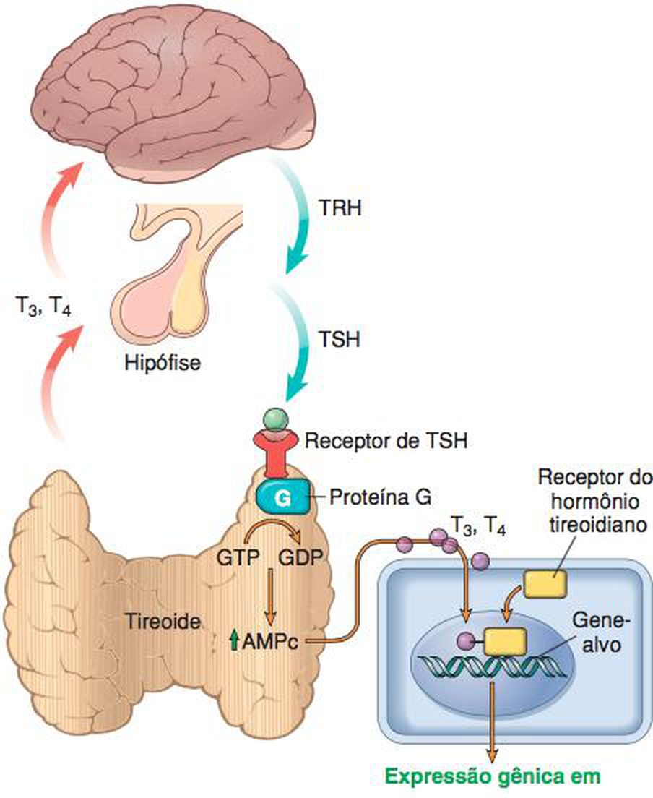
Transporte e conversão
- No sangue, a maior parte do T3 e do T4 circula ligada de forma reversível a proteínas plasmáticas: globulina ligadora de tiroxina (TBG) e transtiretina.
- A tireoide produz muito mais T4 que T3, na proporção de 20:1. O T4 é convertido em T3 na periferia: ~80% do T3 vem dessa conversão, principalmente no fígado e no rim. Também ocorre no cérebro, na hipófise e no tecido adiposo. Só ~20% do T3 sai direto da tireoide.
- O slide detalha as enzimas: parte do T4 vira T3 pelas desiodases tipo 1 (maioria dos tecidos) e tipo 2 (cérebro, hipófise, tecido adiposo); cerca de 40% vira T3 reverso (inativo) pela desiodase tipo 3.
- T3 é ~4× mais ativo que o T4. Os receptores nucleares têm afinidade 10 a 15× maior pelo T3, e as proteínas do sangue seguram o T4 com mais força. Por isso a conversão importa.
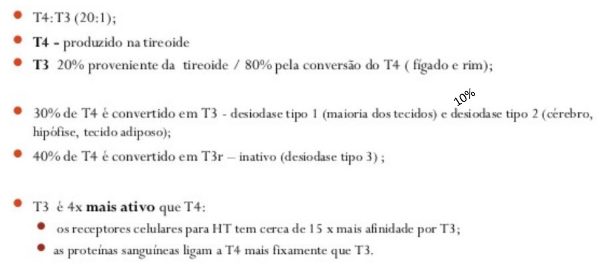
O que os hormônios fazem
- Ligam-se a receptores nucleares em praticamente todas as células e estimulam a transcrição de proteínas.
- Efeitos: ↑ catabolismo de carboidratos e lipídios, ↑ síntese proteica → resultado final: ↑ taxa metabólica basal. Também agem no crescimento, no sistema cardiovascular e no metabolismo.
- Uma das funções mais importantes: o desenvolvimento cerebral do feto e do recém-nascido (tópico 10). A gestante precisa de níveis adequados de hormônio.
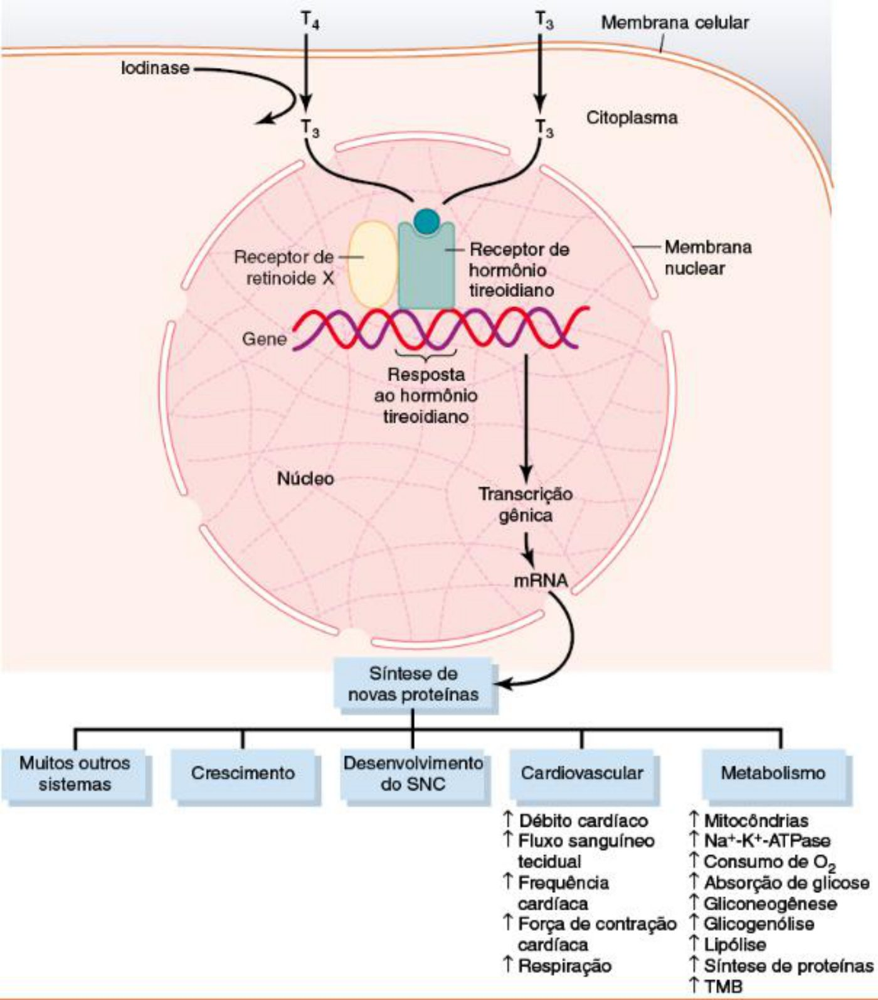
3 · Síntese e liberação de T3 e T4
A professora destacou a sequência abaixo, que reaparece nas doenças congênitas (tópico 8). "Precisa saber essa fisiologia."
- Síntese da tireoglobulina no retículo endoplasmático granuloso e no Golgi (onde recebe carboidratos). Vesículas levam a tireoglobulina até o ápice da célula e a liberam no lúmen do folículo.
- Captação do iodeto circulante pela membrana basal, através do cotransportador sódio/iodo (NIS).
- Oxidação do iodeto pela peroxidase tireoidiana (TPO), na presença de H₂O₂, na membrana apical.
- Passagem do iodo para a luz do folículo pela pendrina, o transportador cujo nome a aula pediu para guardar.
- Iodação ("organificação"): no coloide, junto à membrana apical, o iodo liga-se aos resíduos de tirosina da tireoglobulina (catalisado pela TPO) → MIT (monoiodotirosina) e DIT (di-iodotirosina).
- Acoplamento, ainda na luz: MIT + DIT = T3; DIT + DIT = T4. Os hormônios ficam armazenados no coloide, presos à tireoglobulina, à espera de estímulo.
- Liberação: sob estímulo, a célula endocita o coloide. Enzimas lisossômicas digerem a vesícula. T3 e T4 saem para os capilares ("por isso tem um monte de capilar ao redor"). MIT e DIT sofrem ação da desiodase, que cliva o iodo e recicla o íon e a tirosina para nova síntese.
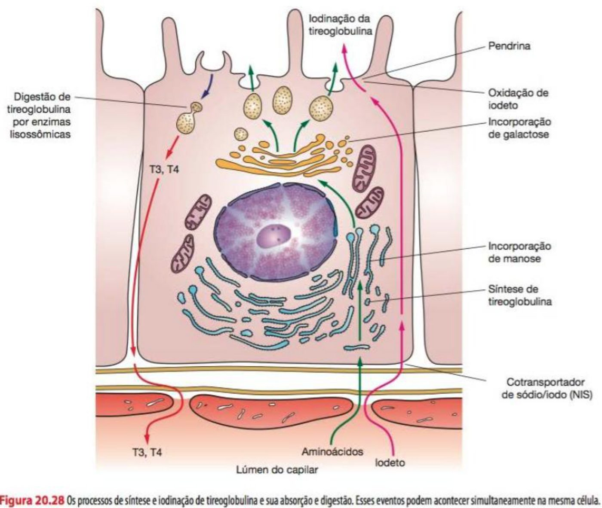
⚠️ Divergência: o que a pendrina transporta
Na aula (e no slide): o iodeto é oxidado dentro da célula, e a pendrina joga o "iodo oxidado" para a luz. Na literatura (Robbins, Guyton, fisiologia atual): a pendrina transporta o iodeto (I⁻) pela membrana apical, e a oxidação pela TPO acontece na superfície apical/coloide, logo antes da iodação. Para a prova, guarde a função cobrada: a pendrina leva o iodo da célula para a luz do folículo. Se ela falha, o iodo não chega à tireoglobulina (síndrome de Pendred).
🎯 O que está no coloide?
Na dúvida levantada em aula, a resposta foi: o coloide contém T3 e T4 prontos e também MIT e DIT. Quando a célula endocita, ela pega tudo. Os hormônios vão para a circulação, e MIT/DIT são desiodados para reaproveitar o iodo. MIT e DIT são produtos da iodação (não da oxidação).
4 · Tirotoxicose × hipertireoidismo: definições e causas
🎯 "Um conceito que vocês não podem esquecer"
Tirotoxicose = estado hipermetabólico por T3 e T4 livres elevados na circulação, seja qual for a origem. Hipertireoidismo = hiperfuncionamento da glândula. O hipertireoidismo é uma das causas (a mais comum) de tirotoxicose, mas não a única.
T3 e T4 podem subir por três caminhos:
- Hiperfunção da glândula = hipertireoidismo;
- Liberação excessiva de hormônio pré-formado: inflamação que rompe folículos e "faz a glândula liberar o hormônio sem ela querer";
- Fonte extratireoidiana: por exemplo, struma ovarii, um teratoma ovariano com tecido tireoidiano funcionante. Teratoma é um tumor de células totipotentes que pode conter dente, pelo e até tecido glandular. Outro exemplo é a tirotoxicose factícia (ingestão de tiroxina).
As três causas mais comuns (todas com hiperfunção)
- Hiperplasia difusa associada à doença de Graves: ~85% dos casos;
- Bócio multinodular hiperfuncionante;
- Adenoma hiperfuncionante: neoplasia benigna cujas células produzem T3 e T4.
- Bócio = aumento da glândula, com ou sem nódulos. "Estou na clínica, palpo a tireoide, percebo que está aumentada: escrevo bócio." Depois se classifica em difuso ou nodular.
- Hipertireoidismo secundário: adenoma hipofisário secretor de TSH (raro). A glândula trabalha demais porque é estimulada de cima.
- Tirotoxicose sem hipertireoidismo: tireoidite granulomatosa (de De Quervain), tireoidite linfocítica subaguda, struma ovarii, tirotoxicose factícia.
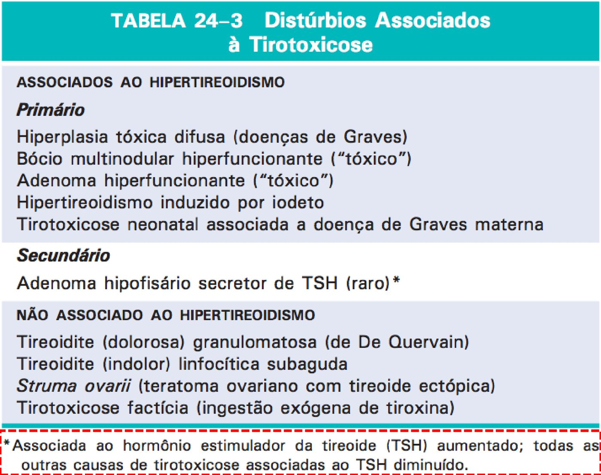
5 · Curso clínico da tirotoxicose, sistema por sistema
Estado hipermetabólico com simpático estimulado: o hormônio aumenta o número e a sensibilidade dos receptores β-adrenérgicos. Guarde a imagem do paciente com fome que perde peso: o metabolismo "está a mil".
| Sistema | O que acontece | Por quê |
|---|---|---|
| Metabolismo | perda de peso apesar do apetite aumentado; produção de calor | ↑ número e atividade das mitocôndrias; ↑ transporte ativo de íons; estímulo ao metabolismo de carboidratos e gorduras |
| Lipídios | colesterol baixo | ↑ receptores de LDL nos hepatócitos → captam LDL do plasma → eliminam pela bile |
| Crescimento | criança cresce rápido, acima da curva, mas a altura final pode ficar reduzida | maturação óssea acelerada → epífises fecham precocemente |
| Pele | macia, quente, ruborizada; sudorese; intolerância ao calor | vasodilatação para perder calor |
| Coração | taquicardia, palpitações, ↑ débito, arritmias (fibrilação atrial), cardiomegalia, ↑ pressão sistólica | efeito direto na excitabilidade + tônus β-adrenérgico |
| Neuromuscular | ansiedade, insônia, hiperatividade, instabilidade emocional; tremor fino; fraqueza se o excesso for grande | superatividade simpática; catabolismo proteico do músculo |
| Olhos | olhar fixo e arregalado, movimento lento da pálpebra superior | superestímulo simpático do levantador da pálpebra superior |
| Digestório | apetite e ingestão maiores; diarreia | ↑ secreções digestivas, ↑ motilidade, esvaziamento gástrico e trânsito mais rápidos |
| Ossos | rarefação óssea, osteoporose, fraturas no hipertireoidismo crônico; cálcio sai do osso e é perdido na urina | T3/T4 estimulam os osteoclastos (que têm receptores para eles), "ao contrário da calcitonina" |
| Respiratório | ↑ frequência e profundidade da respiração; broncodilatação | ↑ consumo de O₂ e produção de CO₂; ↑ receptores β₂ no músculo liso brônquico |
| Unhas | onicólise ("unha de Plummer") | a unha se descola do leito ungueal, na ponta ou em toda a extensão |
Coração: a miocardiopatia tirotóxica
- Com o débito e a frequência muito altos, o coração pode desenvolver arritmia (fibrilação atrial) e hipertrofia.
- Com hormônio muito alto por muito tempo, o catabolismo proteico excessivo deprime a força do músculo cardíaco → disfunção ventricular esquerda (reversível) e insuficiência cardíaca. É a miocardiopatia tirotóxica.
- Pacientes gravemente tireotóxicos podem morrer de descompensação cardíaca.
Tremor
O tremor é leve e fino, de frequência alta (10 a 15 vezes por segundo). É diferente do tremor brusco e mais grosseiro da doença de Parkinson e dos calafrios. Vem da atividade aumentada das sinapses medulares que controlam o tônus muscular.
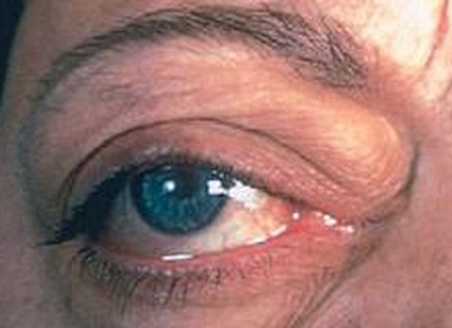
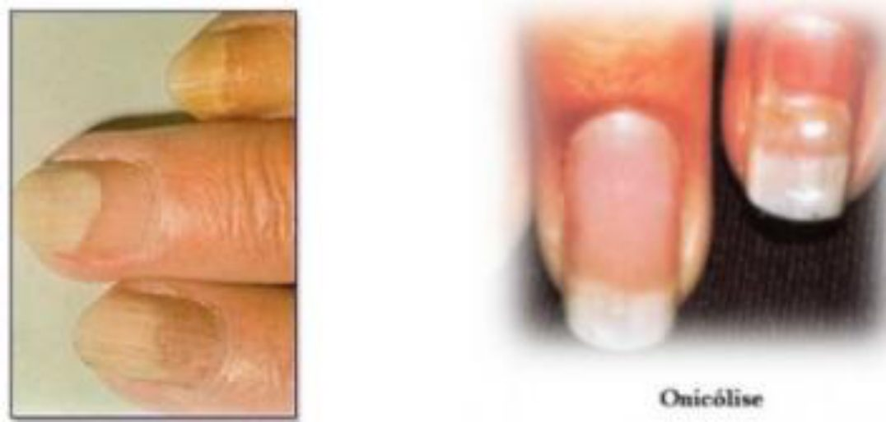
6 · Tempestade tireoidiana e diagnóstico laboratorial
Tempestade tireoidiana
- Início abrupto de hipertireoidismo grave, mais comum sobre doença de Graves não tratada ou mal tratada.
- O gatilho é uma elevação aguda das catecolaminas num paciente que já tem muito T3/T4: cirurgia, infecção, qualquer estresse ou interrupção do antitireoidiano.
- Paciente febril e taquicárdico. É emergência médica: sem tratamento, morre de arritmia cardíaca.
Diagnóstico laboratorial
- O exame inicial é o TSH, que está diminuído já nas fases iniciais (mesmo subclínicas) de hipertireoidismo primário.
- TSH baixo → confirmar com T4 livre (esperado alto). Às vezes só o T3 sobe ("toxicose de T3"), com T4 livre normal ou baixo. Aí a dosagem do T3 ajuda.
- Hipertireoidismo secundário (hipófise): T3/T4 altos com TSH normal ou aumentado, porque o adenoma produz TSH por conta própria.
- TSH alto com T3/T4 altos não é exclusivo do adenoma hipofisário: é preciso descartar resistência aos hormônios tireoidianos e erro laboratorial.
⚠️ Divergência: o teste do TRH
Na aula: para provar o adenoma hipofisário, administra-se TRH. O TSH, que já está alto, "aumenta ainda mais", podendo passar de 30 µUI/mL, o que confirmaria a origem hipofisária. O slide também traz: "aumento normal do TSH após TRH → exclui o hipertireoidismo secundário".
Na literatura (diretrizes de tireotropinoma, Endotext/ETA): o adenoma secretor de TSH costuma ter resposta ausente ou achatada ao TRH. Uma resposta normal ou exagerada favorece resistência ao hormônio tireoidiano. Hoje o teste de TRH é pouco usado (o TRH sintético nem está disponível em vários países). Para a prova da disciplina, siga a aula e lembre a regra que vale nos dois mundos: TSH normal/alto com T3/T4 altos = pensar em causa central.
7 · Hipotireoidismo: definição e classificação
- Produção insuficiente de hormônio tireoidiano, por qualquer desarranjo estrutural ou funcional do eixo hipotálamo–hipófise–tireoide.
- Distúrbio razoavelmente comum; a prevalência aumenta com a idade; ~10× mais comum em mulheres.
- Primário: anormalidade na própria tireoide. É a grande maioria dos casos e pode vir com bócio. Pode ser congênito, adquirido ou autoimune.
- Secundário (central): doença hipofisária ou hipotalâmica. É mais raro.
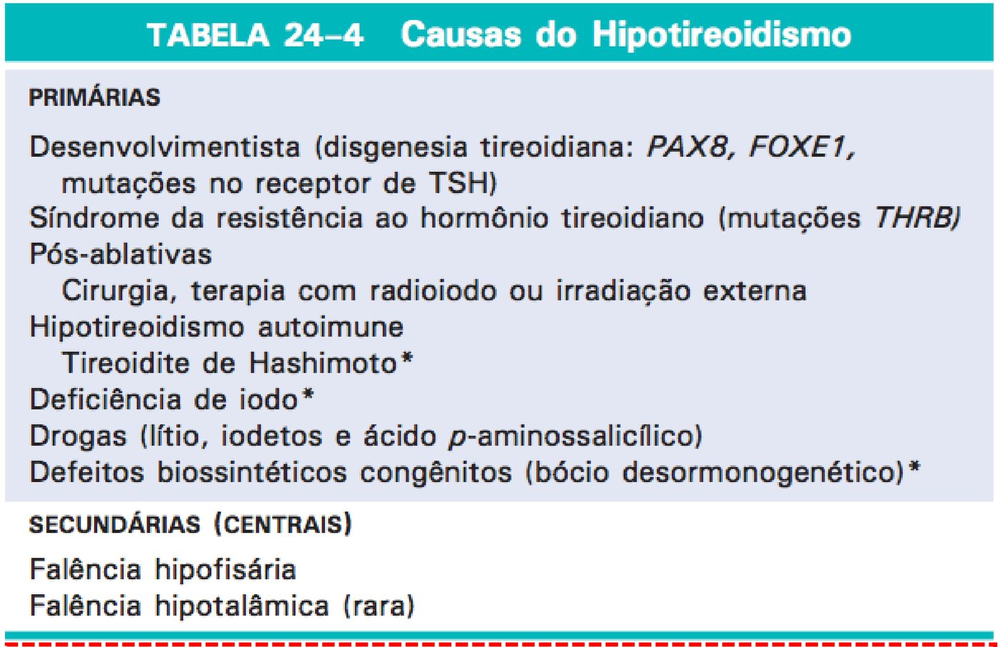
8 · Hipotireoidismo primário: congênito, adquirido e autoimune
Congênito
- Bócio desormonogenético: erros inatos em qualquer etapa da síntese. Pode falhar (1) o transporte de iodo para dentro do tireócito, (2) a organificação ou (3) o acoplamento de MIT/DIT em T3/T4. Nesse último caso, a célula "fica só com os precursores". A causa mais comum são mutações no gene da TPO.
- Síndrome de Pendred: hipotireoidismo + surdez, por mutação no gene SLC26A4, que codifica a pendrina. A pendrina existe no ápice do tireócito e na orelha interna. Sem ela, o iodo não chega à luz do folículo.
- Deficiência endêmica de iodo na dieta. Em algumas regiões a dieta é bociogênica: pobre em iodo ou com alimentos que dificultam o uso do iodo (a aula citou a raiz da mandioca). A mãe mal nutrida em iodo gera bebê já com problema de tireoide.
- Agenesia: a tireoide não se forma.
- Hipoplasia: forma-se, mas menor que o normal.
- Síndrome da resistência ao hormônio tireoidiano (curiosidade, rara): autossômica dominante, com mutação no receptor. As células não respondem → clínica de hipotireoidismo com T3/T4 altos. A hipófise também é resistente, então o TSH tende a ser alto. A comparação da aula foi com o diabetes tipo 2, em que há hormônio, mas as células resistem a ele.
🎯 Teste do pezinho
É como se diagnostica o hipotireoidismo congênito: "super importante, para já saber se o bebezinho tem problema de tireoide". Sem triagem, a agenesia pode passar despercebida nas primeiras semanas (tópico 10).
Adquirido
- Deficiência de iodo na dieta.
- Ablação cirúrgica (tireoidectomia por tumor, por exemplo) e radiação do parênquima. O paciente tireoidectomizado precisa de reposição.
- Drogas:
- dadas de propósito para reduzir a função (propiltiouracil, metimazol, no hipertireoidismo): em dose excessiva, o paciente vai para o hipotireoidismo;
- usadas para outras condições, com hipotireoidismo como efeito colateral: lítio, ácido p-aminossalicílico.
- Iodeto em altas concentrações: efeito Wolff-Chaikoff. O excesso de iodeto inibe de forma aguda e transitória a síntese hormonal e, o efeito clínico mais importante, a liberação de hormônio. A ação é rápida e serve como estratégia na tirotoxicose grave/tempestade (há protocolo próprio).
⚠️ Divergência: o mecanismo do Wolff-Chaikoff
Na aula: o excesso de iodo "bloqueia o transportador de iodo para o interior da célula", e sem iodo dentro da célula não há T3/T4. Na literatura: o efeito Wolff-Chaikoff é a inibição aguda da organificação (iodação da tireoglobulina) pelo excesso de iodeto. A redução do NIS vem depois e é o mecanismo do "escape" do efeito, em alguns dias. Na tirotoxicose grave, o benefício rápido vem sobretudo da inibição da liberação hormonal, e o iodo é dado depois da tionamida. O slide da aula já menciona o "transporte limitado", a "inibição da síntese" e a "inibição da liberação". Na prova, a ideia central é: excesso de iodeto inibe aguda e transitoriamente a tireoide.
Autoimune
- Causa mais comum de hipotireoidismo em regiões com iodo suficiente. A maioria dos casos é tireoidite de Hashimoto (tema do simpósio).
- Pode ser isolado ou parte da síndrome poliendócrina autoimune.
Hipotireoidismo secundário
- Por deficiência de TSH e, muito mais raramente, de TRH.
- Causas hipofisárias (qualquer causa de hipopituitarismo): trauma, tumor hipofisário ou não hipofisário, necrose hipofisária pós-parto. Causas hipotalâmicas: trauma, tumores, radioterapia, doenças infiltrativas.
9 · Curso clínico do hipotireoidismo
Estado hipometabólico, menor taxa metabólica basal. "É tudo ao contrário" da tirotoxicose.
| Sistema | Tirotoxicose | Hipotireoidismo |
|---|---|---|
| Pele e temperatura | quente, úmida; intolerância ao calor | fria e ressecada; sensibilidade ao frio; sudorese diminuída |
| Coração | taquicardia, ↑ débito, arritmia | bradicardia, ↓ débito, dispneia |
| Pressão | ↑ sistólica | ↑ diastólica |
| Sistema nervoso | ansiedade, agitação, insônia | cansaço, depressão, sono, raciocínio lento, memória ruim |
| Peso e apetite | perde peso com fome | ganha peso com apetite reduzido |
| Colesterol | baixo (↑ receptor de LDL) | alto (perfil aterogênico) |
| Intestino | diarreia | constipação (↓ peristaltismo) |
| Cabelo e unhas | onicólise | ásperos, secos, quebradiços; queda de cabelo (↓ síntese proteica) |
| Ciclo menstrual | — | menorragia e polimenorreia; ou ciclos irregulares/amenorreia |
| Voz | — | rouquidão |
Os mecanismos que a aula explicou
- Pressão diastólica alta: menos hormônio → menos metabolismo → menos calor → menos vasodilatação. O tônus periférico fica relativamente alto (vasoconstrição) → ↑ resistência vascular periférica → como a diastólica reflete essa resistência, ela sobe.
- Sistema nervoso: os hormônios agem nos sistemas noradrenérgico e serotoninérgico (libido, humor, memória, raciocínio, sono-vigília). Por isso o quadro pode mimetizar depressão.
- Infertilidade: ↓ T3/T4 → ↑ prolactina → não há ovulação. Também pode haver defeito de fase lútea (progesterona baixa). "Resolvendo o hipotireoidismo, pode resolver" a dificuldade de engravidar.
- Colesterol alto: o oposto da tirotoxicose. Sem o aumento de receptores de LDL, o LDL fica no sangue. Esse perfil aterogênico provavelmente contribui para a mortalidade cardiovascular.
- Rouquidão: pelo mixedema das pregas vocais (o slide também cita paralisia de pregas vocais). O acúmulo de matriz engrossa a voz (tópico 11).
- Também: tornozelos e rosto inchados.
10 · Cretinismo
As duas manifestações clássicas do hipotireoidismo são cretinismo e mixedema. O que separa uma da outra é a idade de início.
- Cretinismo: hipotireoidismo no período fetal ou na lactância (primeiros 2 anos de vida).
- Causas: deficiência de iodo (cretinismo endêmico), erros inatos da biossíntese (bócio desormonogenético, como na síndrome de Pendred) e ausência congênita da tireoide (cretinismo congênito).
A linha do tempo da tireoide fetal
| Momento | O que acontece |
|---|---|
| ~24 dias após a fecundação | a tireoide começa a se formar (primeira glândula endócrina do embrião) |
| 7ª semana | assume a forma definitiva e chega à posição no pescoço |
| ~10ª semana | já há receptores de T3 no cérebro fetal |
| 11ª semana | aparece coloide: surgem os folículos |
| ~20ª semana | TSH e tiroxina fetais começam a subir: o feto passa a produzir hormônio |
| ~35ª semana | níveis fetais chegam aos de adulto |
- Até o 2º trimestre, período de rápido desenvolvimento cerebral, o feto depende sobretudo do T4 materno. Hipotiroxinemia materna nessa fase pode deixar déficit neurológico irreversível. Daí a importância do iodo na dieta da gestante.
- A gravidade do déficit mental depende de quando falta o hormônio. Se a deficiência materna ocorre antes de a tireoide fetal funcionar → retardo grave. Se a queda materna é tardia, com a tireoide fetal já funcionando → o cérebro pode se desenvolver normalmente.
O neonato sem tireoide
- Pode nascer com aparência e função normais, porque recebeu algum hormônio materno no útero (geralmente insuficiente).
- Algumas semanas depois: movimentos lentos, desenvolvimento físico e mental muito atrasado.
- Com tiroxina em qualquer momento, o crescimento físico geralmente se normaliza. O desenvolvimento mental, porém, só é preservado se o tratamento começar cedo. A suplementação nas primeiras 2 semanas de vida pode impedir as alterações morfológicas.
- Por que o cérebro sofre: sem hormônio na fase de neurogênese ativa (até ~6 meses após o parto), há distúrbio da migração neuronal, desorganização das projeções axônicas e redução da sinaptogênese, com retardo de crescimento, ramificação e mielinização.
Características clínicas
- Prejuízo do sistema esquelético e do SNC: baixa estatura, língua projetada, retardo mental grave, características faciais grosseiras.
- O esqueleto cresce menos que os tecidos moles: aparência obesa, estrutura brevilínea, baixa estatura. A língua fica tão grande em relação ao esqueleto que pode obstruir a deglutição e a respiração.
11 · Mixedema e diagnóstico do hipotireoidismo
- Mixedema (doença de Gull): hipotireoidismo que surge em crianças mais velhas (após os 2 anos) ou adultos. Na criança mais velha, os sinais são intermediários entre os do cretino e os do adulto.
- No adulto, começa de forma insidiosa e pode levar anos até a suspeita. Os sintomas iniciais são fadiga, apatia e preguiça mental, que mimetizam depressão.
- Quadro: lentidão física e mental, linguagem e funções intelectuais lentas, intolerância ao frio, excesso de peso, constipação, sudorese diminuída, pele fria e pálida (↓ fluxo), débito cardíaco reduzido (o hormônio regula genes do sarcolema, como as ATPases de cálcio) com dispneia e menor capacidade de exercício, e perfil aterogênico (↑ colesterol total e LDL).
O edema do mixedema
- Flacidez sob os olhos e inchaço da face.
- Por motivo não explicado, acumula-se muito ácido hialurônico e sulfato de condroitina (glicosaminoglicanos) ligados a proteínas no interstício. Forma-se um gel praticamente imóvel, e por isso o edema é pouco depressível.
- Esse acúmulo de matriz na pele, no subcutâneo e em vísceras resulta em alargamento e engrossamento das feições, aumento da língua, edema pouco depressível e aprofundamento da voz.
Diagnóstico laboratorial
- Os sintomas são inespecíficos, então o laboratório é vital. Ganho de peso inexplicado ou hipercolesterolemia → investigar hipotireoidismo.
- TSH = teste de rastreamento mais sensível. Está aumentado no hipotireoidismo primário (perda da inibição retroativa). Não está aumentado no hipotireoidismo por doença hipotalâmica ou hipofisária.
- T4 diminuído no hipotireoidismo de qualquer origem.
| Situação | T3/T4 | TSH |
|---|---|---|
| Tirotoxicose primária (Graves, nódulos, tireoidite, factícia) | ↑ | ↓ |
| Hipertireoidismo secundário (adenoma secretor de TSH) | ↑ | normal ou ↑ |
| Hipotireoidismo primário | ↓ | ↑ |
| Hipotireoidismo secundário (hipófise/hipotálamo) | ↓ | normal ou ↓ (não sobe) |
| Resistência ao hormônio tireoidiano | ↑ | tende a ↑ (com clínica de hipo) |
✅ Resumo rápido da aula
- Histologia: 10–20 g, dois lobos + istmo, abaixo e à frente da laringe · lóbulos com 20–40 folículos · tireócitos achatados = pouca atividade; colunares = muita · coloide = tireoglobulina + T3/T4 prontos + MIT/DIT · célula C → calcitonina → inibe osteoclasto → hipocalcemiante.
- Eixo: TRH (hipotálamo) → TSH (adeno-hipófise) → T3/T4; feedback negativo nos dois níveis · transporte por TBG e transtiretina · T4:T3 = 20:1 · 80% do T3 vem de conversão periférica (fígado e rim) · T3 ~4× mais ativo · receptor nuclear → ↑ TMB, catabolismo, síntese proteica, cérebro fetal.
- Síntese: tireoglobulina → captação de iodeto (NIS) → oxidação (TPO) → pendrina leva o iodo à luz → iodação: MIT/DIT → MIT+DIT = T3; DIT+DIT = T4 no coloide → endocitose → T3/T4 aos capilares; MIT/DIT desiodados e reciclados.
- Tirotoxicose ≠ hipertireoidismo: excesso circulante × hiperfunção · causas: hiperfunção, liberação de pré-formado (tireoidites), fonte extratireoidiana (struma ovarii) · Graves 85% · bócio multinodular · adenoma tóxico · secundário (adenoma hipofisário de TSH) = único com TSH normal/alto.
- Clínica da tirotoxicose: ↑ β-receptores · emagrece com fome · calor · colesterol baixo (↑ receptor LDL) · epífises fecham cedo · taquicardia, FA, miocardiopatia tirotóxica · tremor fino 10–15/s · olhar fixo · diarreia · osteoporose (estimula osteoclasto) · broncodilatação · onicólise (Plummer) · tempestade: Graves não tratado + estresse/catecolaminas → febre, taquicardia, morte por arritmia.
- Hipotireoidismo: 10× em mulheres · primário (congênito, adquirido, autoimune) é a maioria · secundário = hipófise/hipotálamo · congênito: bócio desormonogenético (TPO; Pendred = surdez + hipo), deficiência de iodo, agenesia, hipoplasia, resistência ao hormônio · adquirido: iodo, cirurgia, radiação, PTU/metimazol, lítio, Wolff-Chaikoff · Hashimoto = mais comum com iodo suficiente · teste do pezinho.
- Clínica do hipo: frio, pele seca, bradicardia, ↑ diastólica (↑ RVP), depressão/sono, ganho de peso, colesterol alto, constipação, cabelo e unhas ásperos, ↑ prolactina → anovulação, rouquidão.
- Cretinismo (até 2 anos): baixa estatura, língua projetada, face grosseira, retardo mental · até o 2º trimestre o feto depende do T4 materno · déficit precoce = grave · tratar nas primeiras 2 semanas · Mixedema (após 2 anos/adulto): lentidão, GAG no interstício → edema pouco depressível, voz grossa · TSH ↑ no primário, não sobe no central; T4 ↓ em qualquer origem.
🧫 Resumão Pré-Prova · Patologias da Tireoide
Revisão da véspera · Anato Pato II · Aula 10 · só o que foi enfatizado
- 10–20 g · dois lobos + istmo · abaixo e à frente da laringe · cápsula, capilares fenestrados, lóbulos com 20–40 folículos.
- Folículo = tireócitos (células foliculares) + coloide (tireoglobulina, T3/T4 prontos, MIT e DIT).
- Achatada = pouca atividade · colunar (núcleo grande) = muita atividade.
- Célula C (parafolicular, entre os folículos) → calcitonina → inibe osteoclasto → ↓ reabsorção óssea → hipocalcemiante.
- TRH (hipotálamo) → TSH (adeno-hipófise) → receptor de TSH no tireócito → T3/T4 · feedback negativo em hipófise e hipotálamo.
- Transporte: TBG (globulina ligadora de tiroxina) e transtiretina, ligação reversível.
- T4:T3 = 20:1 · 80% do T3 = conversão periférica (fígado e rim; também cérebro, hipófise, adiposo) · T3r = inativo (desiodase 3).
- T3 ~4× mais ativo; receptor nuclear com afinidade 10–15× maior pelo T3.
- Efeitos: ↑ catabolismo de carboidratos e lipídios, ↑ síntese proteica → ↑ TMB · papel fundamental no cérebro fetal e do recém-nascido.
- 1) Tireoglobulina (RE + Golgi) → luz · 2) iodeto entra pelo NIS · 3) oxidação pela TPO + H₂O₂ · 4) pendrina leva o iodo à luz · 5) iodação ("organificação") → MIT e DIT.
- MIT + DIT = T3 · DIT + DIT = T4 · acoplamento e estoque no coloide.
- Estímulo → endocitose do coloide → lisossomos → T3/T4 aos capilares · MIT/DIT → desiodase → iodo reciclado.
- ⚠️ Divergência: o slide diz que a pendrina transporta "iodo oxidado"; a literatura diz iodeto, oxidado na superfície apical.
- Tirotoxicose = T3/T4 livres altos no sangue (estado hipermetabólico) · hipertireoidismo = glândula hiperfuncionante (a causa mais comum, não a única).
- 3 caminhos: hiperfunção · liberação de hormônio pré-formado (tireoidite rompe folículos) · fonte extratireoidiana (struma ovarii, factícia).
- Mais comuns (com hiperfunção): Graves (~85%) · bócio multinodular hiperfuncionante · adenoma hiperfuncionante.
- Bócio = aumento da glândula (difuso ou nodular), não sinônimo de nódulo.
- Secundário: adenoma hipofisário secretor de TSH (raro) → único com TSH normal/alto; todos os outros têm TSH ↓.
- ↑ número e sensibilidade dos receptores β · perde peso com apetite aumentado · ↑ mitocôndrias, ↑ transporte ativo → calor, sudorese, intolerância ao calor.
- Colesterol baixo: ↑ receptor de LDL no hepatócito → bile · criança: cresce rápido, mas epífises fecham cedo → altura final menor.
- Coração: taquicardia, ↑ débito, FA, cardiomegalia, ↑ sistólica · miocardiopatia tirotóxica (catabolismo proteico deprime o miocárdio → IC).
- Tremor fino, 10–15/s (≠ Parkinson) · ansiedade, insônia · olhar fixo/arregalado, pálpebra lenta.
- Diarreia (hipermotilidade) · osteoporose (T3/T4 estimulam osteoclastos) · broncodilatação (β₂), ↑ FR · onicólise = unha de Plummer.
- Tempestade tireoidiana: Graves não tratado/mal tratado + cirurgia, infecção, estresse ou suspensão do antitireoidiano → catecolaminas → febre, taquicardia → morte por arritmia · emergência.
- ↑ com a idade · 10× mais em mulheres · primário (na glândula) = maioria · secundário = hipófise (inclui necrose pós-parto) ou hipotálamo, mais raro.
- Congênito: bócio desormonogenético (transporte de iodo, organificação, acoplamento; TPO = mais comum) · Pendred = surdez + hipotireoidismo (pendrina, SLC26A4) · deficiência de iodo (dieta bociogênica, mandioca) · agenesia · hipoplasia · resistência ao hormônio (rara; T3/T4 e TSH altos).
- Adquirido: deficiência de iodo · cirurgia · radiação · PTU/metimazol (dose demais) · lítio, ácido p-aminossalicílico (efeito colateral) · Wolff-Chaikoff: excesso de iodeto inibe a tireoide de forma aguda e transitória → usado na tirotoxicose grave.
- Autoimune: Hashimoto = causa mais comum onde o iodo é suficiente · Hashimoto + pós-ablativo = maioria nos países desenvolvidos.
- Diagnóstico do congênito: teste do pezinho.
- Pele fria e seca, sensibilidade ao frio · bradicardia, dispneia · ↑ pressão diastólica: menos calor → menos vasodilatação → ↑ RVP.
- Cansaço, depressão, sono, memória e raciocínio lentos (sistemas noradrenérgico e serotoninérgico).
- Apetite ↓ com ganho de peso · colesterol alto · constipação · cabelo e unhas ásperos, queda de cabelo · tornozelos e rosto inchados · rouquidão.
- Ciclo: menorragia/polimenorreia, ou irregular/amenorreia · ↑ prolactina → anovulação → infertilidade que pode melhorar ao tratar a tireoide.
- Cretinismo = início fetal ou até os 2 anos · causas: deficiência de iodo (endêmico), erro inato (desormonogenético), ausência da tireoide (congênito).
- Tireoide fetal: forma-se ~24 dias · forma definitiva na 7ª sem · folículos na 11ª · produz hormônio a partir da ~20ª · nível de adulto na ~35ª.
- Até o 2º trimestre o cérebro fetal depende do T4 materno · falta precoce → retardo grave; falta tardia (com a tireoide fetal funcionando) → cérebro pode ser normal.
- Neonato sem tireoide: normal ao nascer (T4 materno) → semanas depois, lentidão e atraso · tiroxina normaliza o crescimento, mas a mente só se preserva com tratamento precoce (primeiras 2 semanas) · migração neuronal, axônios, sinapses, mielinização.
- Clínica: baixa estatura, língua projetada (pode obstruir deglutição e respiração), face grosseira, retardo mental · esqueleto cresce menos que os tecidos moles.
- Mixedema (doença de Gull) = após os 2 anos/adulto · insidioso, mimetiza depressão · lentidão, frio, constipação, pele fria e pálida, ↓ débito, perfil aterogênico.
- Edema pouco depressível: ácido hialurônico + sulfato de condroitina formam gel no interstício → face larga e grosseira, língua grande, voz grave.
- Hiper primário: TSH ↓ (mesmo no subclínico) → confirmar com T4 livre ↑ · "toxicose de T3": só o T3 sobe.
- Hiper secundário: T3/T4 ↑ com TSH normal ou ↑ · descartar resistência ao hormônio e erro laboratorial.
- ⚠️ Teste do TRH: na aula, o TSH sobe ainda mais (acima de 30 µUI/mL) no adenoma; na literatura, o adenoma costuma ter resposta achatada e a resposta exagerada sugere resistência ao hormônio.
- Hipo: TSH = teste mais sensível, ↑ no primário, não sobe no central · T4 ↓ em qualquer origem · ganho de peso inexplicado ou colesterol alto → investigar.
- Tirotoxicose (excesso circulante) ≠ hipertireoidismo (hiperfunção da glândula).
- Calcitonina inibe osteoclasto ≠ T3/T4 em excesso estimulam osteoclasto (osteoporose).
- MIT + DIT = T3 ≠ DIT + DIT = T4.
- NIS (iodeto entra pela base) ≠ pendrina (iodo vai para a luz pelo ápice) ≠ TPO (oxida e iodiniza) ≠ desiodase (recicla iodo de MIT/DIT; converte T4 em T3 na periferia).
- Hiper → ↑ sistólica ≠ hipo → ↑ diastólica.
- Hiper → colesterol ↓ (↑ receptor LDL) ≠ hipo → colesterol ↑.
- Cretinismo (até 2 anos) ≠ mixedema (após 2 anos/adulto).
- Hipo primário: TSH ↑ ≠ secundário: TSH não sobe · hiper secundário: TSH normal/↑.
- Tremor da tirotoxicose (fino, 10–15/s) ≠ tremor do Parkinson (brusco, grosseiro).
Banco de Questões — Patologias da Tireoide
Anato Pato II · Aula 10 · estilo ENADE/residência.